How your day gets its structure
Four steps, the same every day. After a week you won’t even think about it.
Write
In the evening or in the morning: ten notes on your board, big and small. Type them or say them.
Commit
Pick your top task and press and hold the button. Your plan is set.
Check off
Every finished note gets its stamp. Anything new becomes an extra.
Wrap up
In the evening you decide: move to tomorrow, later, or let it go.
Two kinds of busy days
The same limit helps both: ten things, firmly planned. That’s it.
Your list never gets shorter
You get a lot done, and still 30 items are open every evening. Here everything may go to the parking spot, but only ten make it onto the board. Once they’re done, you’re done – and it feels good.
You want your day under control
Events, tasks, habits – all in one place, in order of time. In the morning you decide what counts, small notes count like big ones, and you break big things into clear steps.
Everything a day needs – on ten notes
Tasks, habits, focus and events on one board. Whatever you don’t need stays out of the way.
Just say it
Tap the mic and say what’s coming up. “Haircut on November 3 at 1 pm” becomes an event, “Buy milk and bread” goes on the shopping list, and “Lena’s birthday is May 3” becomes an anniversary. Even without opening the app – with the mic widget on your home screen.
Exactly ten spots
The eleventh thought has to wait. So you only plan what you can really do in one day. One note is your top task.
A promise to yourself
You commit by pressing and holding the button. You earn a point for every note you finish.
Habit tracker
Exercise, drink water, no phone in bed: habits show up on their days by themselves. With a tally and a streak.
Focus timer
Flip your phone over and Focus Time runs. Do Not Disturb stays on until you pick it up again.
Calendar and events
Events from your calendar appear as notes on your board. Your own events sync with your Google Calendar – with guests if you like.
Birthdays and anniversaries
Just say “Lena’s birthday is May 3”. The app remembers and reminds you a few days ahead.
Shopping list, notes, checklists
Enter shopping lists, notes or checklists by voice too, attach them to a note, print them or share them via WhatsApp.
Timeline
When times come in: drag notes to a time of day with your finger, tap free time to plan it.
Big tasks in steps
If something feels too big, split it into three to five small steps. The last step is the summit.
A parking spot for everything else
Everything may go on the list – only ten go on the board. The rest waits in the parking spot. On Sundays Tack reminds you of what has been waiting there for a while.
Home screen widget
Your daily plan in the style of your board. Check things off without opening the app. A small widget adds new tasks by voice.
Your day or week as a PDF – a plan for the fridge or your desk.
Board, timeline, progress
Several views of the same day. The sample data is made up.
The board
All ten notes at a glance. Every kind has its own word and symbol, not just a color.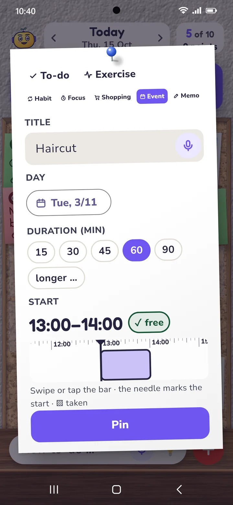
New note
Type or just say it. “Haircut on November 3 at 1 pm” becomes an event with day and time set.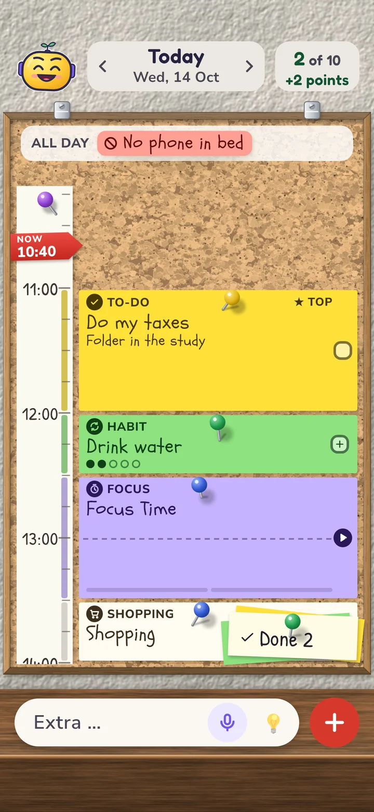
The timeline
Your daily plan by time. Move notes with your finger, tap free time to plan it.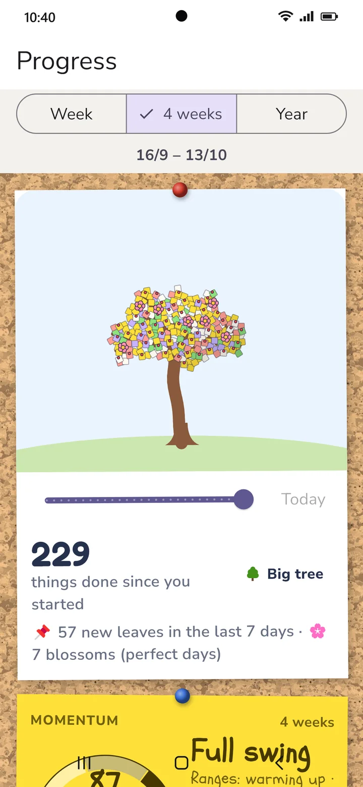
Progress
Week, 4 weeks, year: what you got done, when things go well, which habits stick. Every finished task becomes a leaf on your tree.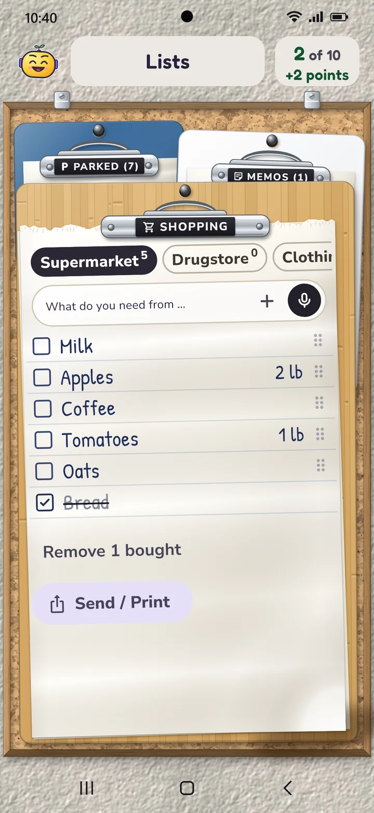
Lists
Shopping list per store, parking spot and notes. Saying them works too.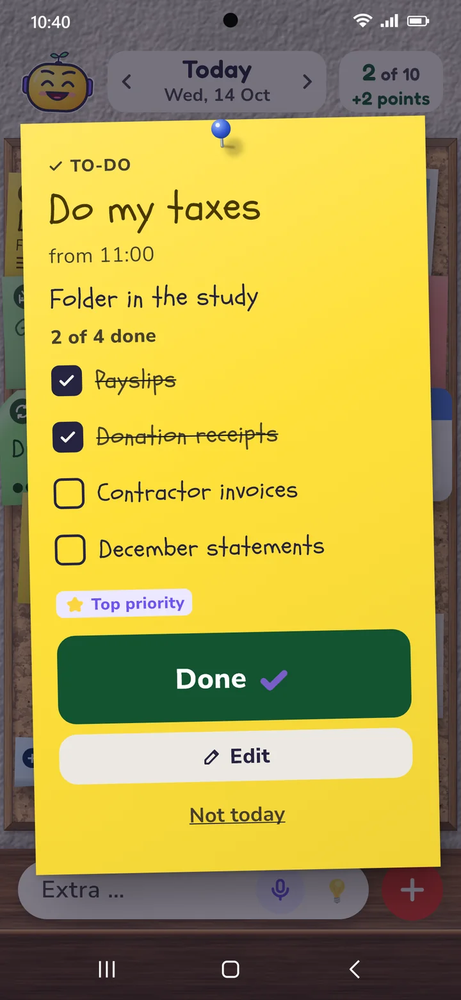
Checklist on a note
Subtitle and list right on the task. Check off, add, carry over to tomorrow.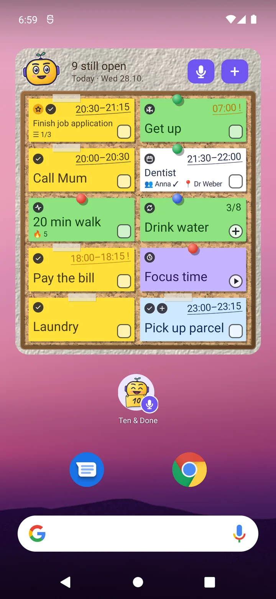
The widget
Your daily plan on the home screen, in the style of your board. Check off, count up, start focus time – without opening the app. Below it the small widget: Tack with a microphone, the size of an app icon – tap it and start talking.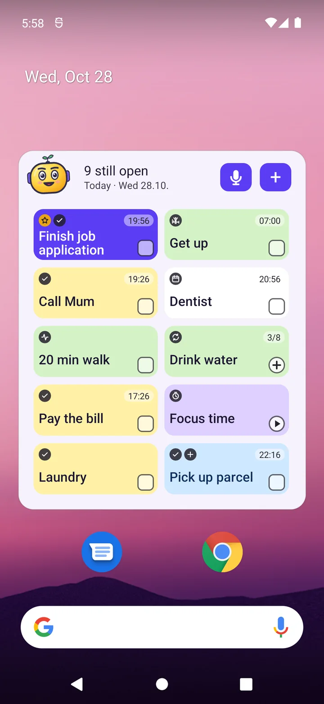
Widget in Bento
The widget follows your style. Microphone and ＋ take new tasks right from the home screen.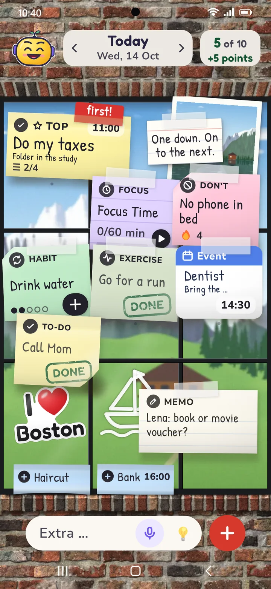
The window
Notes on the glass, behind them sea, mountains, city – or your own photo.Your board, your style
Cork, whiteboard, window with or without a frame, Bento, Glass & Glow, Editorial, Clear as a calm list by time, or Simple with large type. Add a quote, a photo and small accessories. Light and dark.
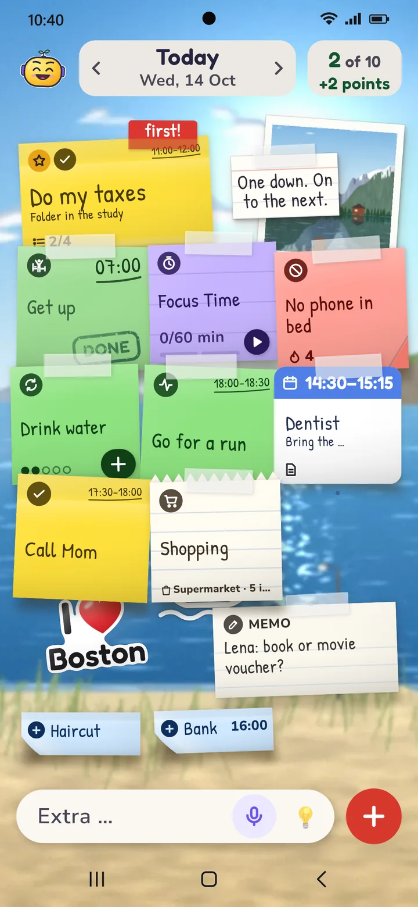
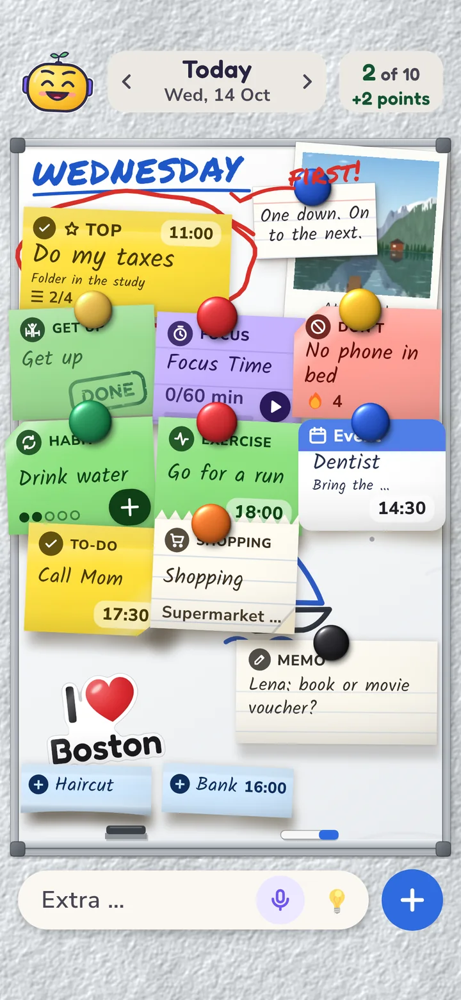
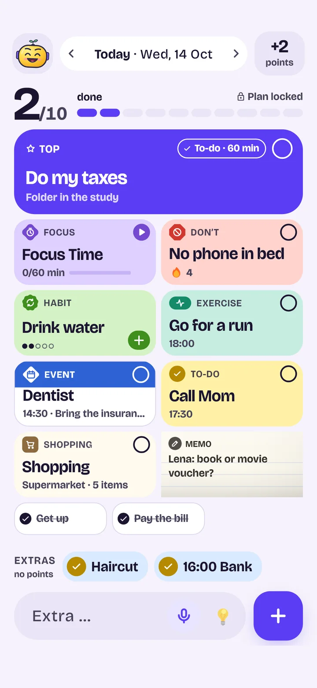
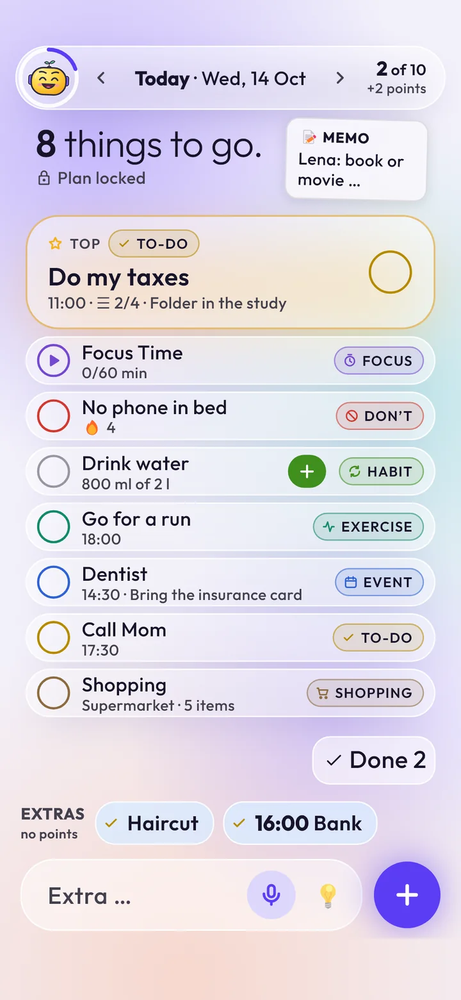
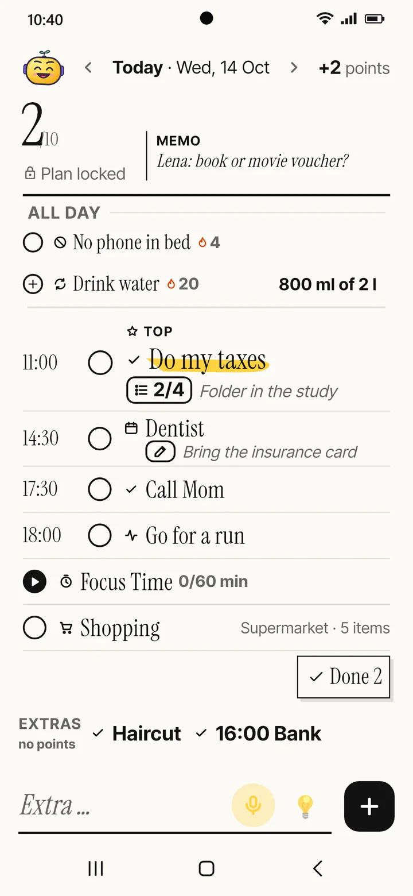
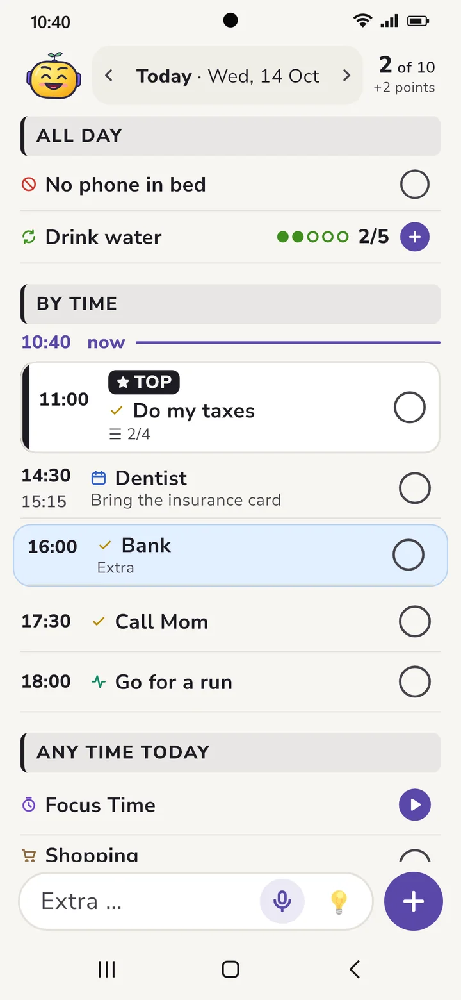
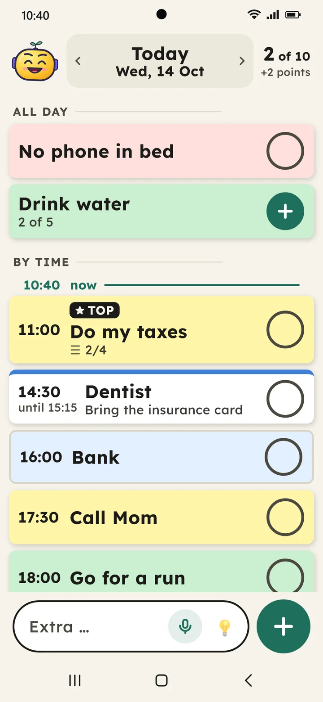
At home on your tablet too
Portrait or landscape: on a tablet your board gets plenty of room, timeline and lists sit side by side, and progress shows everything at a glance.
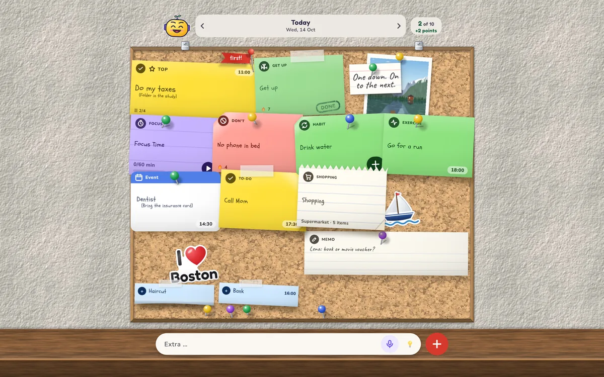
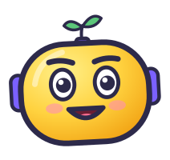
One down. On to the next.
This is Tack. Tack cheers you on, gives you a nudge and one short tip every day on organizing your day well. That’s all Tack wants. If you prefer something simpler, pick a different look.
Your plan is yours
Ten & Done needs no internet to plan. No one else ever sees what you write down.
- No accountNo sign-up, no email address, no password.
- No serverEverything stays on your phone and works offline. If your phone’s Google backup is on, Android takes the data along to your next phone, encrypted.
- No adsNothing blinks, nothing is sold to you.
- No trackingNo trackers and no usage statistics.
Free – and Premium if you want more
You get the core without buying anything and without a time limit. Premium is a yearly subscription or a one-time purchase, with no trial that runs out.
Free
- 10 tasks a day with top task and points
- Habits, Focus Time, calendar
- Timeline, shopping list, parking spot, notes
- Board widget and voice input
- Progress of the week
- Cork and Glass & Glow styles
Premium
- All styles, colors and fonts
- Progress over 4 weeks and the whole year
- Big tasks in steps
- Invite guests to events
- List widget, piggy bank, certificates
- More buddies and accessories for Tack
If a subscription ends, everything you set up stays.
Good to know
Why exactly ten?
Ten things fit on one screen and into one day. Plan more and you usually get less done – and feel bad about the rest in the evening. Ten isn’t too many: notes can be as small as today allows.
What if I can’t think of ten things?
Then pick small ones. “Drink a glass of water” counts just like “do my taxes”. Tap 💡 and Tack suggests something: things you’ve done before, items from your parking spot and small ideas.
What happens if I don’t finish something?
The point you staked is gone. Nothing more. The next morning Tack asks what to do with the note: plan it again, split it into steps or let it go.
I’m sick or on vacation. Now what?
Mark the days. Then there’s no plan, no reminders and no penalties. Your streak waits until you’re back.
Can I do more than ten things?
Yes. After you commit, anything new becomes an extra. Extras don’t earn points, but you’ll see them in your progress.
Does Ten & Done cost anything?
The core is free: 10 tasks a day, habits, Focus Time, calendar, lists, notes, widget and the progress of your week. Premium is a yearly subscription or a one-time purchase.
Is there a widget?
Yes. The board widget shows your daily plan on your home screen, in the style of your board, and you can check things off right there. A small widget adds new tasks by voice.
Can the app see my calendar?
Only if you turn it on. Then it shows events from your phone’s calendar as notes. When you create an event in the app, it adds it to your Google Calendar. It doesn’t change other events.
Does it work on tablets?
Yes, in portrait and landscape. On a tablet, timeline and lists sit side by side and progress is laid out in columns.
Is Ten & Done available for iPhone?
The app launches on Android phones and tablets first. An iPhone version is planned.
A problem or an idea?
Write to us. We read every message.
No mail app opens when you click? Copy the address and paste it into your mailbox, e.g. Gmail or Outlook.com.